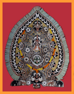

|  |
Introduction Koloms are colourful portraits of male and female deities drawn on the outer surface of the cleaned arcanut palm sheath.. The colours are used are black, turmeric, red, white and green. black colour is derived from charcoal obtained by burning the dry mango leaves or coconut shells. the turmeric colour is obtained from the roots of certain turmeric plans where as the red colour is obtained by dissolving the red stone powder. The white is, whiteness of the canvas itself. Similarly the green.Koloms are performed by diveetly or by the trained artist to get rid of natural calamities untimely draughts, dieses, evil spirits etc. The Genesis of Padayani |
|
Padayani the traditional art form of Kerala, to be precise of central Travancore, is the embodiment of so many elements depicting the innate as well as the acquired, the spiritual as well as the temporal elements of societal structure of an ethnic group. The term Padayani and Pateni had evolved by combining two different terms Pata and ani both having more than one meaning. In one sense Pata means group of soldiers and ani means rows. Hence the term Padayani can be used to mean the artistic performance of soldiers standing in rows and columns. It is the sense that tempts us to interpret Padayani as part of the martial tradition. Of course, there exists row wise and column wise movements in the performance, but it is not a mere martial art form. No doubt the traditional martial culture of kerala has influenced padayani; but it is basically a ritual, and not a martial art.In fact, it developed over centuries into a performing art with direct and indirect influences of both. In another sense, pata means flock ,offering, creation, sacrifice etc. and ani means having the quality of , bearing the ornaments or costumes etc. One of the episodes in padayani is known by the term pooppata which means the offering of flowers. Besides this literal meaning, pooppata stands for a sorcery devoutly carried out by the lower castes as well as the upper castes to get rid of the hysteria of women and to bless the married women for having children. This is an act filled with traditional elements. This whole hearted tradition sacrifice has nothing to do with so called martial culture. |
|